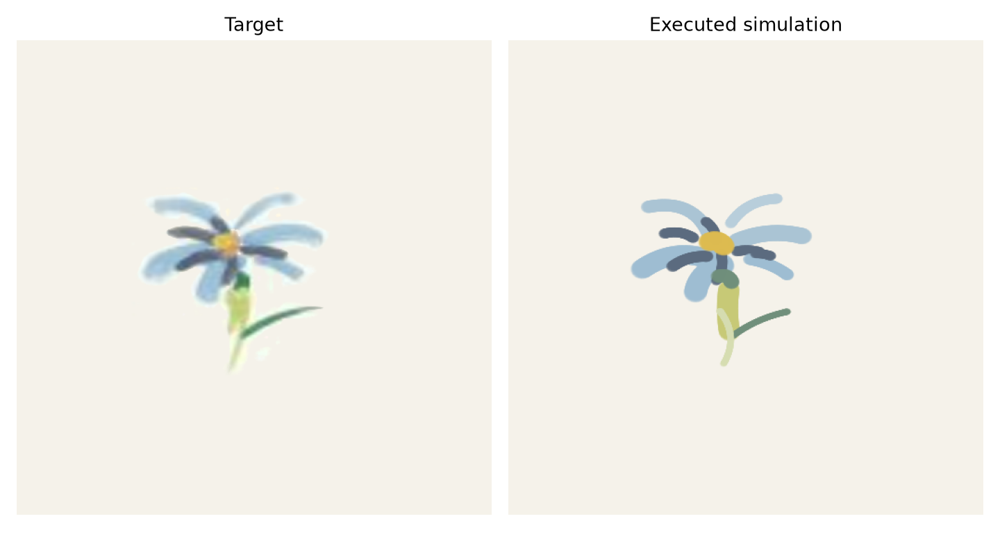
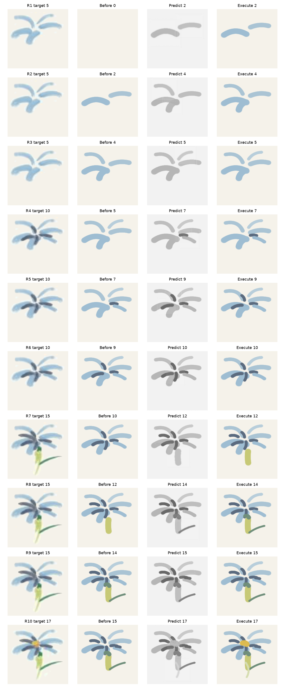
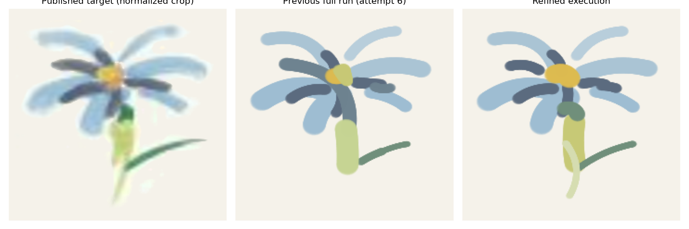
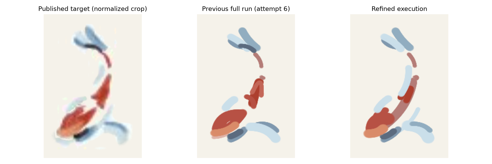
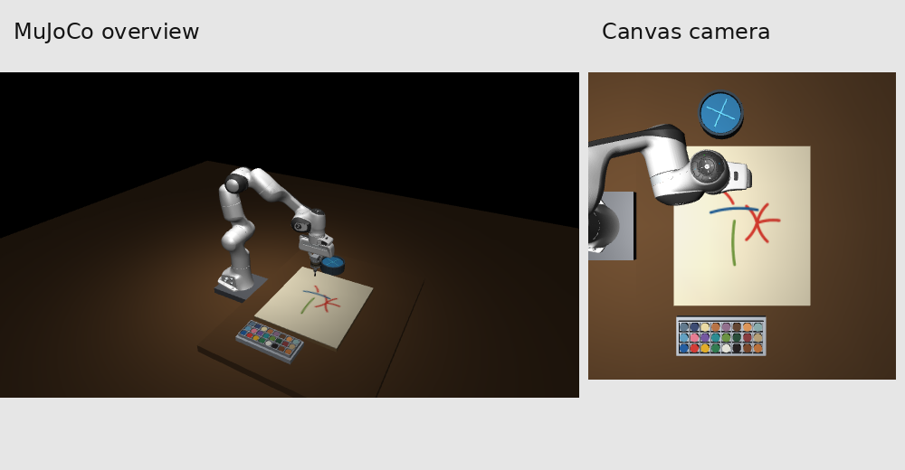
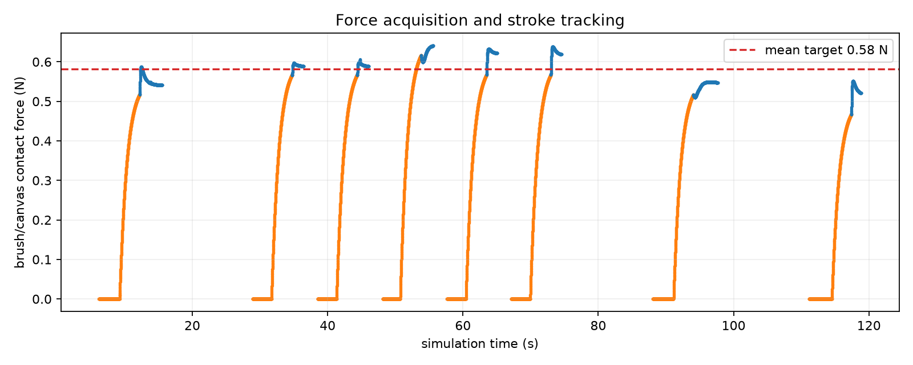

IMPASTO 本地仿真复现：最终优化报告
本页展示阶段一到阶段三的最终复查结果。重点是 Flower/Fish 每轮的目标分解、learned dynamics 预测、真实 MuJoCo 执行和视觉误差归因。
最终指标
0.7579Flower foreground IoU
0.7153Fish foreground IoU
0.00705Flower prediction/execution L1
0.00968Fish prediction/execution L1
0.114 mmFlower trajectory RMSE
0.120 mmFish trajectory RMSE
最终结果




逐轮审计




打开完整中文报告，其中包含 Flower 1--10 轮的逐轮诊断、Fish 分段诊断、阶段一力控、阶段二训练和问题归因。
连续场景视频
阶段一和阶段二

